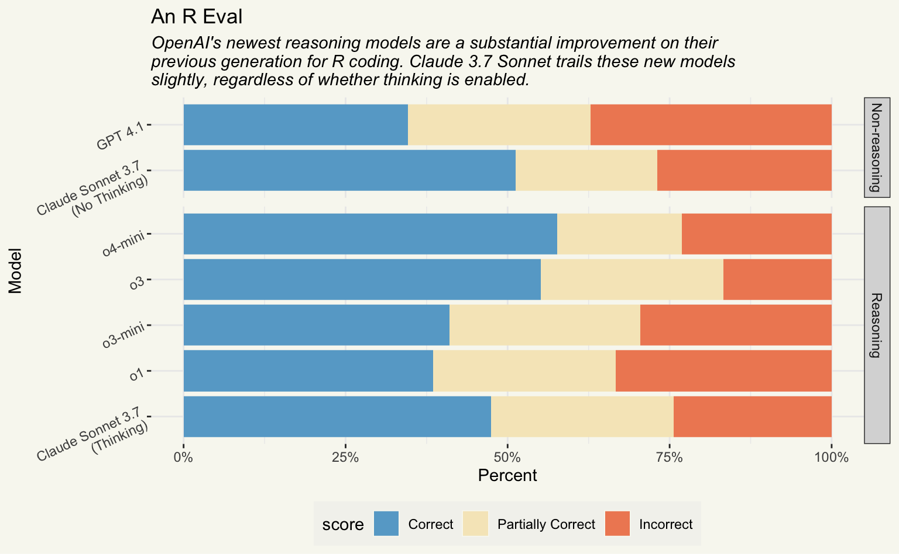

48 hours after the drop of the GPT 4.1 series of models, a trio of non-reasoning models focused on “real-world developer needs,” OpenAI dropped another set of models, o3 and o4-mini. These two models are the latest generation of thinking models from OpenAI, and they form the backbone of Codex, a new Claude Code competitor from OpenAI. In short, OpenAI wants market share among developers.
After the 4.1 drop, I put together a blog post evaluating the new models against GPT-4o and my daily driver Claude 3.7 Sonnet on a dataset of R coding tasks. The tl;dr there: they’re better than 4o, but still trailing behind Claude Sonnet 3.7 (with thinking disabled). That said, the GPT 4.1 nano model seems to pack quite the punch for its price point. Following the release of o3 and o4-mini, I was curious how reasoning impacts these models’ performance on the dataset of R coding tasks I’ve been experimenting with.
This post will use a new tool I’ve been working on called vitals to evaluate o3 and o4-mini on a series of R coding problems. We’ll compare o3 and o4-mini’s performance against the previous generation of thinking models from OpenAI, o1 and o3-mini, as well as GPT 4.1 and Claude Sonnet 3.7.
tl;dr
- Enabling thinking doesn’t seem to impact Claude 3.7 Sonnet’s performance on this eval.
- o3 and o4-mini seem to achieve slightly higher ratings than Claude 3.7 Sonnet.
- It seems like o3 and o4-mini do demonstrate an improvement over the previous generation of reasoning models from OpenAI.
Getting situated
Earlier this week, I wrote up a more thorough description of the vitals package as well as are, a dataset of R coding problems. I’ll abbreviate that here, but you can read that post if you’re feeling lost! In short:
- vitals is an R port of the widely adopted Python framework Inspect for large language model evaluation in R. The package is aimed at supporting ellmer users in evaluating how well their ellmer-based tools work.
-
are, or “An R Eval” is a dataset of R coding problems. Eachinputis a question about R code which could be solved on first-read only by human experts and, with a chance to read documentation and run some code, by fluent data scientists. Solutions are in thetargetcolumn and enable a fluent data scientist to evaluate whether the solution deserves full, partial, or no credit.
Throughout this post, I refer to “thinking out loud” as “reasoning” in general and when I reference OpenAI’s model specfically, but use “Thinking” when referencing Claude, which seems to be the term they use.
Defining models
In ellmer, here’s how we define those model connections:
sonnet_3_7 <- chat_anthropic(model = "claude-3-7-sonnet-latest")
sonnet_3_7_thinking <- chat_anthropic(
model = "claude-3-7-sonnet-latest",
api_args = list(
thinking = list(type = "enabled", budget_tokens = 2000)
)
)
gpt_4_1 <- chat_openai(model = "gpt-4.1")
gpt_o1 <- chat_openai(model = "o1-2024-12-17")
gpt_o3_mini <- chat_openai(model = "o3-mini-2025-01-31")
gpt_o3 <- chat_openai(model = "o3-2025-04-16")
gpt_o4_mini <- chat_openai(model = "o4-mini-2025-04-16")I use the default reasoning_effort values for each of these models, which is “medium”. The budget_tokens I set here is approximately half of the default max_tokens used by chat_anthropic().
If you’re interested in how Gemini’s newest 2.5 Pro release stacks up on this eval, check out this post from two weeks ago.
Note that I needed to configure a ANTHROPIC_API_KEY and OPENAI_API_KEY to connect to these models, respectively. Their pricing per million tokens is as follows:
# A tibble: 6 × 3
Name Input Output
<chr> <chr> <chr>
1 Claude 3.7 Sonnet $3.00 $15.00
2 GPT-4.1 $2.00 $8.00
3 o1 $15.00 $60.00
4 o3-mini $1.10 $4.40
5 o3 $10.00 $40.00
6 o4-mini $1.10 $4.40 Altogether, the data underlying this blog post took around $7 USD to generate; the full-sized reasoning models (o1 and o3) are quite expensive, and you pay for both the tokens you receive and the reasoning tokens, which can add up quickly. I reused the results from Claude 3.7 Sonnet (No Thinking) and GPT 4.1 from my post a couple days ago.
A baseline model
LLM evaluation with vitals happens in two main steps. The first is defining a Task, an R6 method defining important methods for LLM evaluation. Tasks are composed of 3 main components: a dataset, solver, and scorer. Solvers define some system that attempts to solve the problems defined in the dataset, and scorers evaluate how well the solvers did using a grading rubric.
are_task <- Task$new(
dataset = are,
solver = generate(),
scorer = model_graded_qa(
scorer_chat = sonnet_3_7,
partial_credit = TRUE
),
epochs = 3,
name = "An R Eval"
)
are_taskAn evaluation task An-R-Eval.The above uses model grading (or “LLM-as-a-judge”) to evaluate how well the solver addressed the problem. Since different models exhibit different behaviors as judges, we’ll use the same model Claude 3.7 Sonnet as the judge regardless of the model powering the solver.
Second, use Task$eval() to evaluate the solver, evaluate the scorer, and then explore a persistent log of the results in an interactive viewer. This code supplies solver_chat = sonnet_3_7 to evaluate Claude 3.7 Sonnet with thinking disabled as our solver model.
are_sonnet_3_7 <- are_task$clone()
are_sonnet_3_7$eval(solver_chat = sonnet_3_7)I use Claude 3.7 Sonnet with thinking disabled as my baseline model here because it’s my daily driver for coding assistance. I find it’s a good balance between price, speed (as in, how long do I need to wait until I start seeing a response), and performance.
Evaluating the rest
From here, it’s pretty rote. We can evaluate the remaining models by cloning the original task and running $eval() with a new solver chat. First, another round with Claude 3.7 Sonnet, this time with thinking enabled. This is probably the closest apples-to-apples model to compare o3 and o4-mini to:
are_sonnet_3_7_thinking <- are_task$clone()
are_sonnet_3_7_thinking$eval(solver_chat = sonnet_3_7_thinking)Then with GPT 4.1:
are_gpt_4_1 <- are_task$clone()
are_gpt_4_1$eval(solver_chat = gpt_4_1)Now, with the reasoning models:
are_gpt_o1 <- are_task$clone()
are_gpt_o1$eval(solver_chat = gpt_o1)are_gpt_o3_mini <- are_task$clone()
are_gpt_o3_mini$eval(solver_chat = gpt_o3_mini)are_gpt_o3 <- are_task$clone()
are_gpt_o3$eval(solver_chat = gpt_o3)are_gpt_o4_mini <- are_task$clone()
are_gpt_o4_mini$eval(solver_chat = gpt_o4_mini)I’ve also situated the logs for this post in the Inspect Log Viewer, a small .js app that allows you to interactively explore evaluation logs. Especially the first few times you run an eval, the tool is super helpful for uncovering unexpected behavior in solving and scoring. The viewer belows allows you to check out the problems in An R Eval and how effectively each of the models evaluated here handled them:
It’s kind of hard to tell which Claude 3.7 Sonnet results are from thinking enabled vs. not in this viewer. The results with thinking enabled are shown initially (and at the top of the sidebar). I’ll fix this in vitals in time for my next post. :)
Analysis
At evaluation time, vitals does a naive accuracy calculation that you can see displayed in the app, but in general is quite restrained in its analysis functionality. Instead, the package aims to get analysts to Happy Data Frame Land as quickly as possible using vitals_bind():
are_eval <-
vitals_bind(
`Claude Sonnet 3.7\n(No Thinking)` = are_sonnet_3_7,
`Claude Sonnet 3.7\n(Thinking)` = are_sonnet_3_7_thinking,
`GPT 4.1` = are_gpt_4_1,
`o1` = are_gpt_o1,
`o3-mini` = are_gpt_o3_mini,
`o3` = are_gpt_o3,
`o4-mini` = are_gpt_o4_mini
) %>%
rename(model = task) %>%
mutate(
model = factor(model, levels = c(
"Claude Sonnet 3.7\n(No Thinking)",
"Claude Sonnet 3.7\n(Thinking)",
"GPT 4.1",
"o1",
"o3-mini",
"o3",
"o4-mini"
)),
reasoning = case_when(
model %in% c("Claude Sonnet 3.7\n(No Thinking)", "GPT 4.1") ~ "Non-reasoning",
.default = "Reasoning"
)
)
are_eval# A tibble: 546 × 6
model id epoch score metadata reasoning
<fct> <chr> <int> <ord> <list> <chr>
1 "Claude Sonnet 3.7\n(No Think… afte… 1 I <tibble> Non-reas…
2 "Claude Sonnet 3.7\n(No Think… afte… 2 I <tibble> Non-reas…
3 "Claude Sonnet 3.7\n(No Think… afte… 3 I <tibble> Non-reas…
4 "Claude Sonnet 3.7\n(No Think… cond… 1 P <tibble> Non-reas…
5 "Claude Sonnet 3.7\n(No Think… cond… 2 P <tibble> Non-reas…
6 "Claude Sonnet 3.7\n(No Think… cond… 3 C <tibble> Non-reas…
7 "Claude Sonnet 3.7\n(No Think… corr… 1 P <tibble> Non-reas…
8 "Claude Sonnet 3.7\n(No Think… corr… 2 C <tibble> Non-reas…
9 "Claude Sonnet 3.7\n(No Think… corr… 3 P <tibble> Non-reas…
10 "Claude Sonnet 3.7\n(No Think… curl… 1 I <tibble> Non-reas…
# ℹ 536 more rowsIn this dataset, each row represents a single time a solver is invoked to answer a question:
modelgives the model used to solve a given questionidgives the question idepochidentifies the run/resample of the given questionscoresshows whether the scoring model (Claude Sonnet 3.7) identified the solver’s answer as Incorrect, Partially Correct, or Correct. It’s an ordinal factor withI < P < C.metadatais a list column containing just about all of the information that vitals collects during the evaluation process.
We’re interested in which of these models are right more often. We have 26 unique questions, each resampled across 3 epochs for each of a number of models. To get a glimpse of each of these models’ performance, we could start off with a bar chart:
are_eval %>%
mutate(
score = fct_recode(
score,
"Correct" = "C", "Partially Correct" = "P", "Incorrect" = "I"
),
) %>%
ggplot(aes(y = model, fill = score)) +
geom_bar(position = "fill") +
scale_fill_manual(
breaks = rev,
values = c("Correct" = "#67a9cf",
"Partially Correct" = "#f6e8c3",
"Incorrect" = "#ef8a62")
) +
scale_x_continuous(labels = scales::percent) +
labs(
x = "Percent", y = "Model",
title = "An R Eval",
subtitle = "OpenAI's newest reasoning models are a substantial improvement on their\nprevious generation for R coding. Claude 3.7 Sonnet trails these new models\nslightly, regardless of whether thinking is enabled."
) +
theme(
plot.subtitle = element_text(face = "italic"),
legend.position = "bottom",
axis.text.y = element_text(angle = 25, hjust = 1)
) +
facet_grid(vars(reasoning), scales = "free", space = "free")
Could the differences we’re seeing be attributed to random noise, though? We can use a hierarchical modeling technique called a mixed model to model the probability of each score (i.e., correct, etc.) as a function of the LLM. In this case, observations are not independent; some questions may be harder than others, and we’re repeating each question multiple times since we’ve set epochs = 3. A random intercept on the question id can help account for this variation. Since score is ordinal, we use a cumulative link mixed model rather than the usual suspect lme4::glmer():
summary(are_mod)Cumulative Link Mixed Model fitted with the Laplace approximation
formula: score ~ model + (1 | id)
data: are_eval
link threshold nobs logLik AIC niter max.grad cond.H
logit flexible 546 -400.57 819.13 464(2748) 7.81e-05 6.7e+01
Random effects:
Groups Name Variance Std.Dev.
id (Intercept) 8.047 2.837
Number of groups: id 26
Coefficients:
Estimate Std. Error z value
modelClaude Sonnet 3.7\n(Thinking) -0.04864 0.37509 -0.130
modelGPT 4.1 -1.03628 0.37864 -2.737
modelo1 -0.74840 0.37672 -1.987
modelo3-mini -0.43926 0.37543 -1.170
modelo3 0.63618 0.38425 1.656
modelo4-mini 0.39391 0.39141 1.006
Pr(>|z|)
modelClaude Sonnet 3.7\n(Thinking) 0.8968
modelGPT 4.1 0.0062 **
modelo1 0.0470 *
modelo3-mini 0.2420
modelo3 0.0978 .
modelo4-mini 0.3142
---
Signif. codes: 0 '***' 0.001 '**' 0.01 '*' 0.05 '.' 0.1 ' ' 1
Threshold coefficients:
Estimate Std. Error z value
I|P -2.10134 0.57381 -3.662
P|C 0.03191 0.57125 0.056For the purposes of this post, we’ll just take a look at the Coefficients table. The reference model here is Claude 3.7 Sonnet with thinking disabled. Positive coefficent estimates for a given model indicate that that model is more likely to receive higher ratings than Claude 3.7 Sonnet with thinking disabled. Altogether, we see:
- Enabling thinking doesn’t seem to impact Claude 3.7 Sonnet’s performance on this eval.
- While, directionally, o3 and o4-mini seem to achieve higher ratings than Claude 3.7 Sonnet without thinking, those differences aren’t shown to be statistically significant.
- While we don’t quantify the variation in this analysis, it seems like o3 and o4-mini do demonstrate an improvement over the previous generation of reasoning models from OpenAI.
I’m certainly interested to try out o4-mini in the next couple weeks and see what it’s capable of!
Thank you to Max Kuhn for advising on the model-based analysis here.